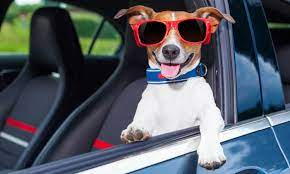

Where your dog waggles more and barks less!
Ever sense i was a kid, dogs have been some of my best friends. I grew up helping my Aunt Maria in her dog grooming salon, The CLip-n-Fluff. It was only naturl that this love for for pets owuld develop into my life's work. After college, In managed a local veternary clinic for six years, until 2003, why my aunt was getting ready to retire and wanted me to take over her busniess. I saw the need for a place where dogs of every breed and size could play and get some TLC while their families were at work or out of town. And so, that year, Pampered Pups was born. We've been pampering dogs ever sence, and they havent stopped wagging their tails!
Pampered Pups is just as popular with owners as it is with their pets. Our services and hours are tailored to meet the needs of busy pet owners who want their "best friends" treated with affection and care they get at home. Come see for yourself. Stop in for a visit, and bring your dog along with you.For more information reguarding our staff!
Dee Ramos
Owner/Operator
Pampered Pups
Fetch Service
We also offer pick-up and delivery services within a 20-mile radius of the metro aera. That's right! We'll fetch your dog and bring him back when your can't. Just give us a 24-hour notice, and we'll be at your door in the morning, and back again at th end of the work day in our climate-controlled Fetch Mobile.
Rates
$12 for One-way Trip
$20 for Roundtrip
Business Hours
Monday-Saturday: 7:30am-6:00pm
Sunday: Closed
